第二章 关系模型介绍
Intro to Relational Model
Structure of Relational DB
Relation Schema and Instance
- Relation Schema
R =(A 1 , A 2 , ..., A n )
eg: instructor = (ID, name, dept_name, salary)
-
关系模式:是指一个关系的结构, 即: 这个关系有哪些属性(Attribute), 也就是 "表结构".
-
Relation Instance
-
关系实例:是指这个关系当前的具体数据, 即: 表中实际存储的内容. 例如:
\(r(R)\) 就是一个关系实例
-
tuple(元组)
-
元组:关系实例里面的每个元素, 就叫做元组. 即: 对应表格中的一行数据.
关系也就是元组的集合;
关系是无序的, 因为它的本质是集合, 具体来讲, tuple 的存放顺序不会影响关系本身;
-
Attribute(属性)
-
Domain(域): 每个属性允许取值的范围;
- Atomicity(原子性): 即: 不可再分性; 一个属性只能对应一个特性, 一个属性里也不能放多个值;
- null(空值): 特殊值; 后续有关于 null 的运算;
Keys
- Superkey(超码/超关键字)
- 是一个或者多个属性的集合
- 这些属性可以实现 唯一标识 tuple
- Candidate key(候选码)
- 即满足极小性的 superkey(它的任意真子集都不是超码 /去掉任何一个属性都无法唯一表示数据)
- Primary key(主码)
- 从候选键中挑出的一个, 具有唯一性
- 主码属性要加下划线
- Foreign key(外码约束)
- 定义: 关系 r 1 的 A 属性到关系 r 2 的 B 属性的外码约束, 其中, 在任何数据库实例中, r 1 中的每个元组对 A 的取值一定与关系 r 2 某个元组对 B 的取值相等(eg: 要在授课表中新添加一个老师 ID, 但是这个 ID 在讲师表中没有, 那么这个插入请求就被取消了)
- 引用关系(referencing relation)/从表/子表: 即 r 1
- 被引用关系(referenced relation)/主表/父表: 即 r 2
Relational Algebra(关系代数)—— 一种过程化语言
基础运算符
其中: 选择, 投影, 重命名是 一元运算符(unary); 并, 差, 笛卡尔积是 二元运算符(binary)
-
Select(\(\sigma\))选择
-
作用: 选择满足给定谓词(predicate, 即: 条件)的元组;
- 谓词的规则
是命题演算的 公式, 可以由 \(\land\)(and), \(\lor\)(or), \(\lnot\)(not) 连接组合
-
记作: \(\sigma_{p}(r)\)
-
例子: 选出 A 关系中工资大于 1000 的元组
: \(\sigma_{salary>1000}(A)\)
-
Project(\(\Pi\))投影
-
作用: 保留所选择的属性列
-
记作: \(\Pi_{A1,A2,...,An}(r)\)
-
例子: 选出关系 A 中的名称和 ID 属性
: \(\Pi_{name,ID}(A)\)
-
特性: 去除重复行(Duplicate rows), 因为关系的本质是集合
-
Union(\(\cup\))并
-
作用: 合并两个关系的所有元组, 并自动去重
- 记作: \(r \cup s\)
-
合法前提:
- 两个关系的元数必须相同
- 对应位置的属性值域必须兼容, 即: 对应列数据类型必须一致
-
Set diffenence(\(-\))差
-
作用: 选出属于关系 A 但不属于关系 B 的元组
- 记作: \(r - s\)
-
合法前提: 和并操作一致
-
Cartesian-Product(\(\times\))笛卡尔积
-
作用: 把任意两个关系的信息组合成一个新关系
-
记作: \(r \times s\)
-
合法前提
- 两个关系的属性集合不相交(disjoint), 即: 没有同名的属性
为了避免同名, 重命名(renaming) 是重要的
-
Rename(\(\rho\))重命名
-
作用: 将表达 E 的计算结果重命名为 X
- 记作: \(\rho_{x}(E)\)
- 在此基础上, \(\rho_{x(A1,A2,...,An)}(E)\) 把关系的 n 个属性依次命名为 A1, A2,..., An
- 核心特点: 尽修改关系/属性的名称(即关系模式), 而不修改实际数据(即关系实例)
派生运算符
Join Operation(连接运算)
-
Semijoin(\(R \ltimes S\))半连接
-
Inner Join 内连接
-
Theta Join(\(\bowtie_\theta\))\theta 连接
- 实质: 先做笛卡尔积, 再对结果做选择筛选
- 记作: \(r \bowtie_{\theta} s\) = \(\sigma_{\theta}(r \times s)\)
-
Natural Join(\(\bowtie\))自然连接
-
本质: \(\theta\) 连接+投影; 是特殊的 \(\theta\) 连接
-
记作: \(r \bowtie s\)
-
规则:
- 找出两个表中 所有同名的公共属性
- 要求这些 公共属性的值必须相等, 自动完成等值 匹配筛选
- 最终结果自动 去掉重复的公共属性列
当自然连接中没有公共属性时, 相当于没有帅选条件, 直接进行笛卡尔积
-
作用: 日常做关联查询的时候, 两个表总是会用同名的外码/主码做关联, 自然连接刚好直接匹配同名属性, 所以不用手动写匹配条件, 是最常用的连接类型
-
例子:
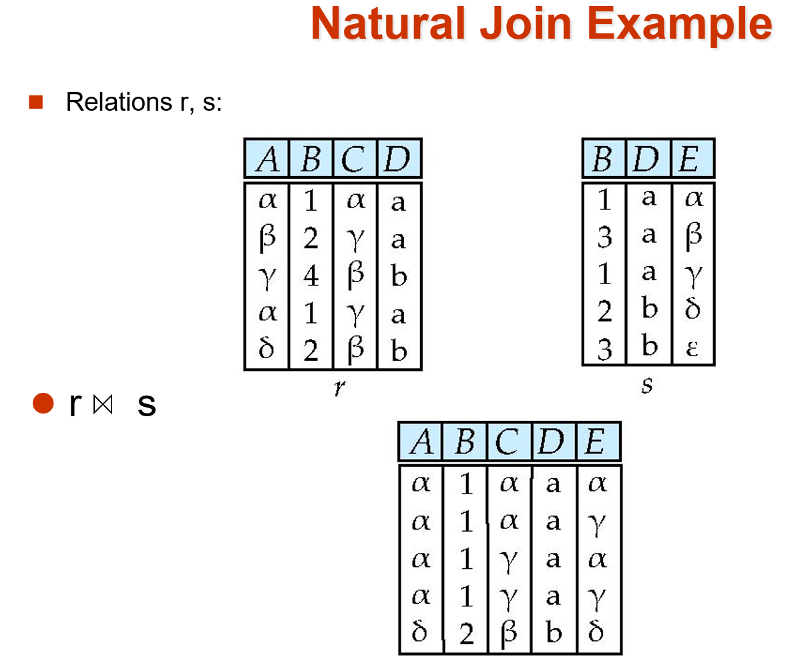
-
-
-
Outer Join(外连接)
-
作用: 是普通连接的扩展, 用来解决普通连接丢失数据的问题; 它会用 null 填充缺失的数据, 避免信息丢失
-
分类
- Left Outer Join(\(R ⟕ S\))左外连接: 保留左表所有元素
- Right Outer Join(\(R ⟖ S\))右外连接: 保留右表所有元素
- Full Outer Join(\(R ⟗ S\))全外连接: 左右表都保留, 哪边匹配不上就用 null 填充
-
例子:
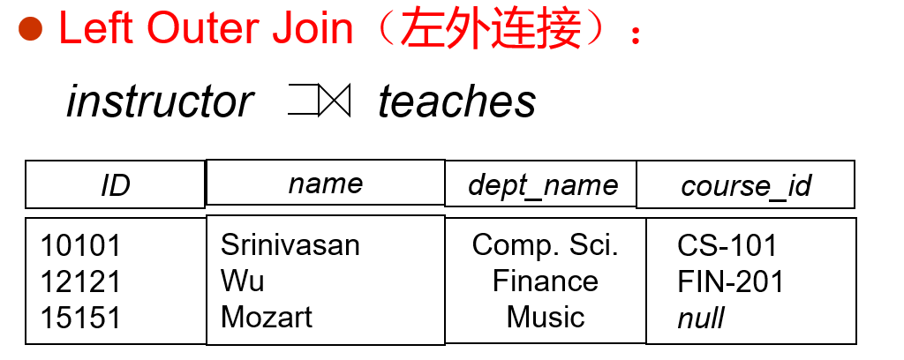
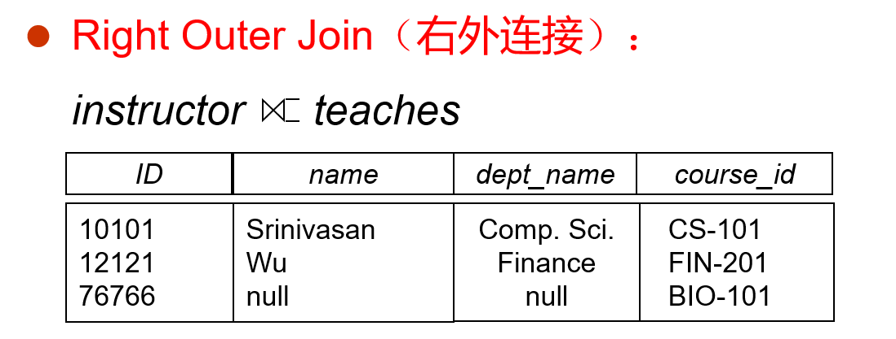
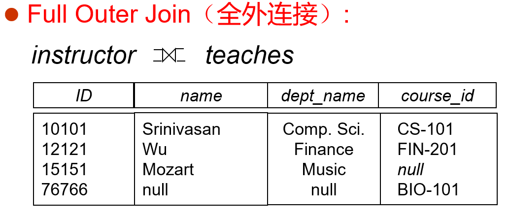
-
其他派生运算符
-
Set-intersection Operation(\(\cap\))交运算
-
作用: 找到给出关系的 共有元组
- 记作: \(r \cap s\) = \(r-(r-s)\)
-
合法前提:
- 两个关系的元数必须相同
- 对应位置的属性值域必须兼容, 即: 对应列数据类型必须一致
-
Assignment Operation(\(\leftarrow\))赋值运算
-
作用: 类似于编程中的临时变量; 将复杂的关系代数表达式拆分开, 把中间部分的 结果赋值给临时变量, 以简化表达式
-
记作:
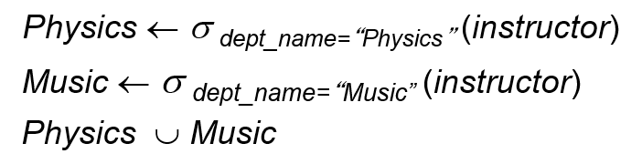
-
Division Operation(\(÷\))除运算
-
定义: 给定两个关系 \(r(R)\) 和 \(s(S)\)(\(R\), \(S\) 是属性集合), 并且 \(S\) 是 \(R\) 的子集, 那么结果 \(r÷s\) 的结果是: 一个属性为 \(R\) 中去掉 \(S\) 的关系; 并且这个关系满足: 结果中的每一个元组 \(t\) 和 \(s\) 中的每一个元组进行笛卡尔积后, 结果一定在 \(r\)中
-
作用: 适合处理带有 for all 对于所有 这类描述的查询
-
例子:
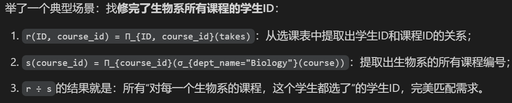
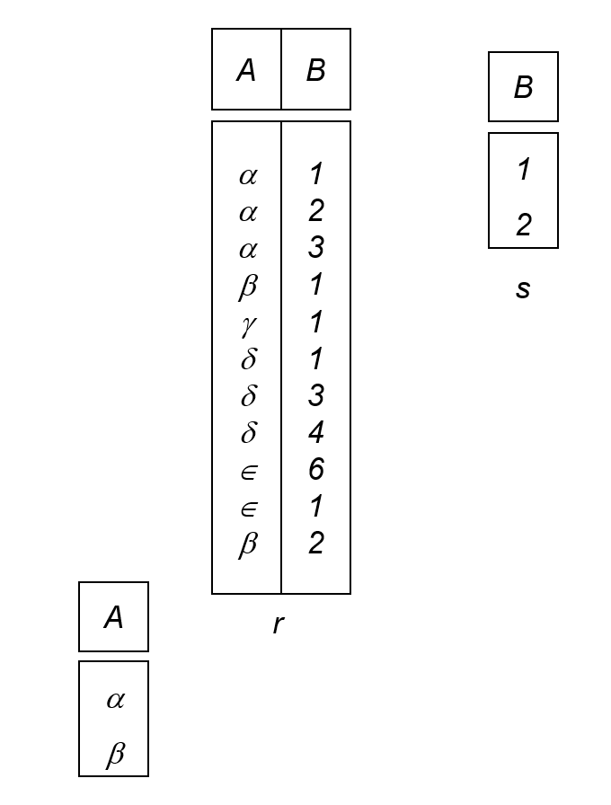
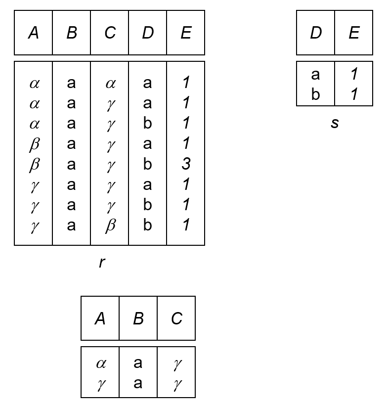
空值(null value)
-
定义: 元组中某个属性的值可以存储为 null, 用来表示未知/不知道 (unknown)
-
算数运算规则: 任何算数表达式, 只要含 null , 结果一定为 null
-
Three-valued logic 三值逻辑:
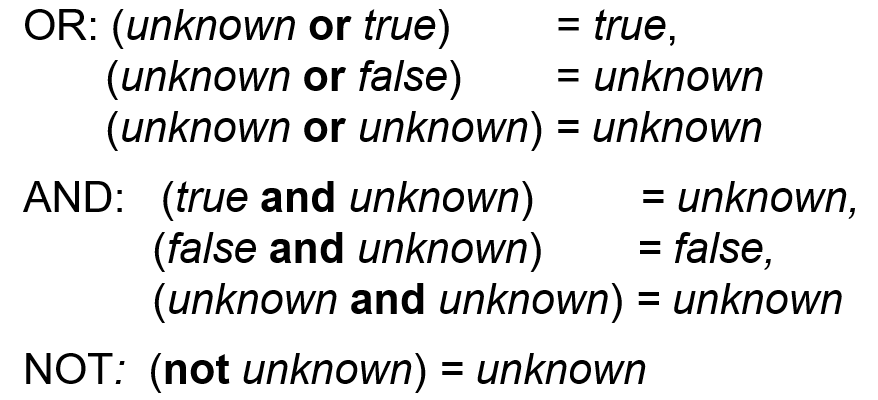
在 SQL 中, 配有新语法 "\(P\) is unknown", 若 P 的真值是 unknown, 则返回 true
Extended-Relational-Algebra-Operations(扩展关系代数运算)
Generalized Projection(广义投影)
-
功能: 允许在投影列表中使用 算术运算表达式
-
记作: \(\Pi_{F1,F2,...,Fn}(E)\)**
-
参数说明
- E: 关系表达式
- Fn: 算数表达式
-
例子:
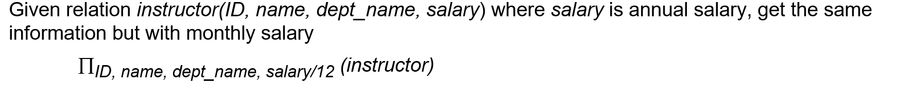
Aggregate Functions and Operations(聚集函数和运算)
-
作用: 接受一组值, 计算后返回一个单值结果
-
**常用函数: **
-
avg: 计算平均值
- min: 计算最小值
- max: 计算最大值
- sum: 计算总和
- count: 计数; 统计值的个数
-
count-distinct: 去重计数; 只统计不同值的个数
-
写法: \(_{G_1,G_2} \mathcal{G}_{F_1(A_1), F_2(A_2)} (E)\)
-
参数说明
- E: 关系代数表达式
- \({G_1,G_2}\): 分组属性列表, 按这些属性分组, 其中相同值的为一组(可以为空)
- \({F_i}\): 每个分组需要执行的聚集函数
- \({A_i}\): 每个聚集函数作用的目标属性名
-
结果说明
- 默认情况, 聚集运算的结果得到的新列是没有属性名的(因为是新值), 所以需要用重命名来解决, 为了方便, 可以直接把重命名写在聚集运算里
- 比方说:
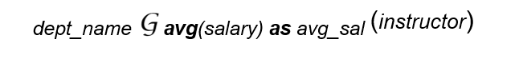
-
例子(实际用了重命名):
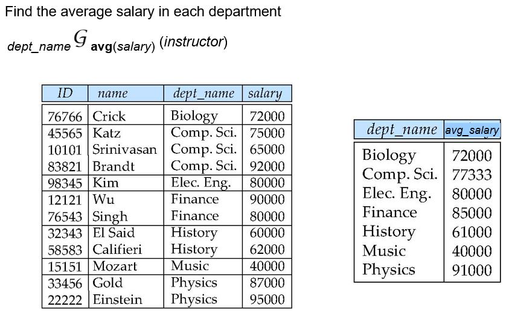
Modification of the Database
数据库内容修改一共分三类操作: 删除, 插入和更新; 所有操作都可以由赋值操作(\(\leftarrow\))来完成
Deletion
-
逻辑: 每一次都必须 删除一整个元组, 不能只删除某个属性中的值
-
记作: \(r \leftarrow r-E\)**
-
参数说明
- \(r\): 要修改的原关系
- \(E\): 查询出要删除的元组的关系代数表达式
-
例子:
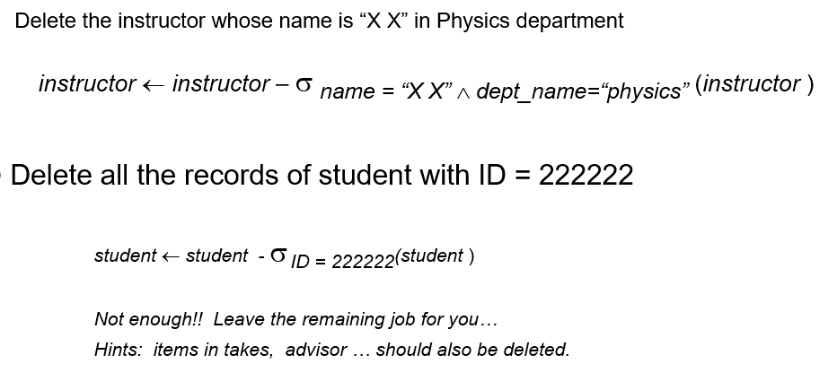
Insertion
-
作用: 将新元组插入到原关系里, 既可以插入单个元组, 也可以插入一个查询结果的所有元组
-
记作: \(r \leftarrow r \cup E\)**
-
参数说明
- \(E\): 要么是 常量关系 (手动写好要插入的单个/多个元组) 要么是 查询得到的元组集合, 和原关系做并运算再写回就完成了操作
-
例子:
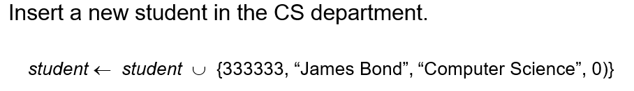
Updating
-
作用: 修改已有元组的某个属性值, 不删除整行, 只改指定列的值
-
记作: \(r \leftarrow \Pi_{F_1,F_2,...F_i}(r)\)**
-
更新实现的两种方式
-
方法一: 利用广义投影直接进行覆盖, 不需要修改的属性直接保留, 需要修改的用算数表达式进行计算
-
方法二: 先删除再插入; 先将旧元组筛选出来, 删掉旧元组, 然后再将修改好的元组插入回去
-
例子:
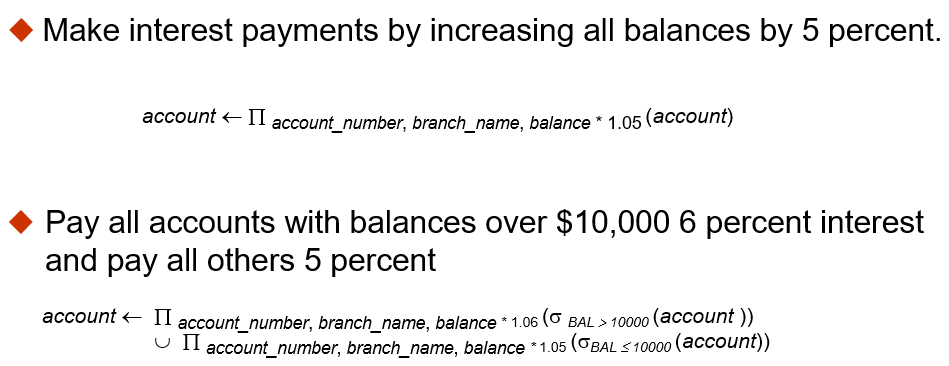
Multiset Relational Algebra
传统关系代数中的任何运算都会将结果中的重复元组删除, 但为了适配 SQL 语义(SQL 本身默认是基于多重集合的), 扩展出了多级关系代数
- 多集的表示方法
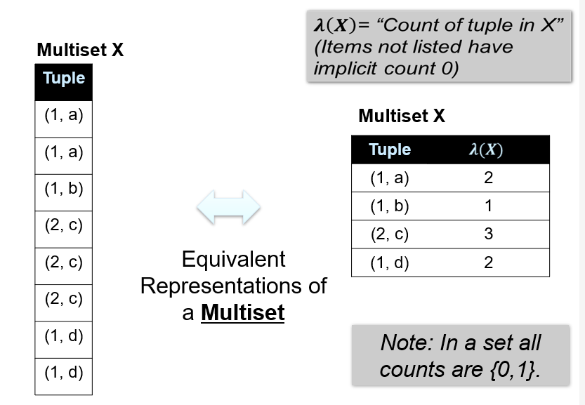
记录每个元组的计数 \(λ(X)\) (lambda 函数, 计数函数, 没列出的元组计数默认为 0)
-
多重集的运算规则
-
多重集的交集
- 对任意元素, 结果多重集 \(Z\) 的重数为: \(λ(Z)=min(λ(X),λ(Y))\) 也就是取两个输入多重集里, 该 元素重数的较小值:
-
多重集的并集
- 重数取和
-
多重集关系代数
-
选择(selection): 如果一个元组满足选择条件, 那么结果中该元组的重复次数和它在输入多重集中的 重复次数相同.
- 投影(projection): 每个输入元组都会在结果中对应产出一个元组, 哪怕投影后出现重复元组, 也会 保留重复, 不会去重.
- 笛卡尔积(cross product): 如果关系 \(r\) 中有 \(m\) 份元组 \(t_1\), 关系 \(s\) 中有 \(n\) 份元组 \(t_2\), 那么笛卡尔积 \(r \times s\) 中, 组合元组 \(t_1,t_2\) 会 有 \(m \times n\) 份.
- 其他运算符(Other operators)(\(m,n\) 是两个输入中对应元素的份数)
- 并集(union): 结果 保留 \(m+n\) 份 该元素
- 交集(intersection): 结果 保留 \(min(m,n)\) 份 该元素
- 差集(difference): 结果 保留 \(max(0,m-n)\) 份 该元素
SQL and Relational Algebra
讲解 SQL 语句和多集关系代数的等价转换规则
-
基础 SQL
-
例子:
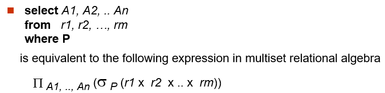
-
转换逻辑
- FROM 子句的多个表, 对应做笛卡尔积, 把所有表拼接成一个关系
- WHERE 子句的条件 P, 对应选择运算 \(\sigma_{P}\), 筛选符合条件的行
- SELECT 子句指定的列, 对应投影运算 \(\Pi\), 提取需要的列, 因为是多集代数, 会保留重复, 和 SQL 语义一致.
-
-
带分组聚合的 SQL
-
例子:
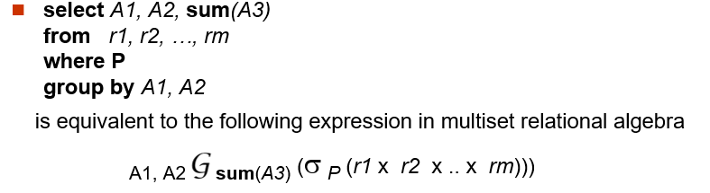
-
转换逻辑
- 还是先做表的笛卡尔积, 再用 WHERE 筛选行
- 然后按 GROUP BY 的属性做分组聚集, 得到统计结果, 最后投影提取需要的列并重命名, 完全对应 SQL 的执行逻辑.
-
-
等价 Query
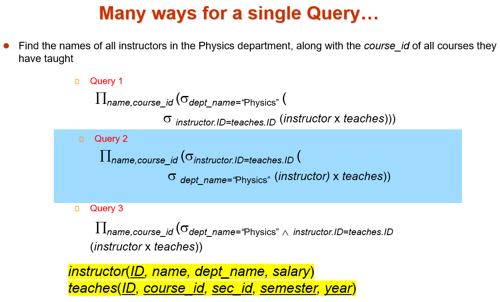